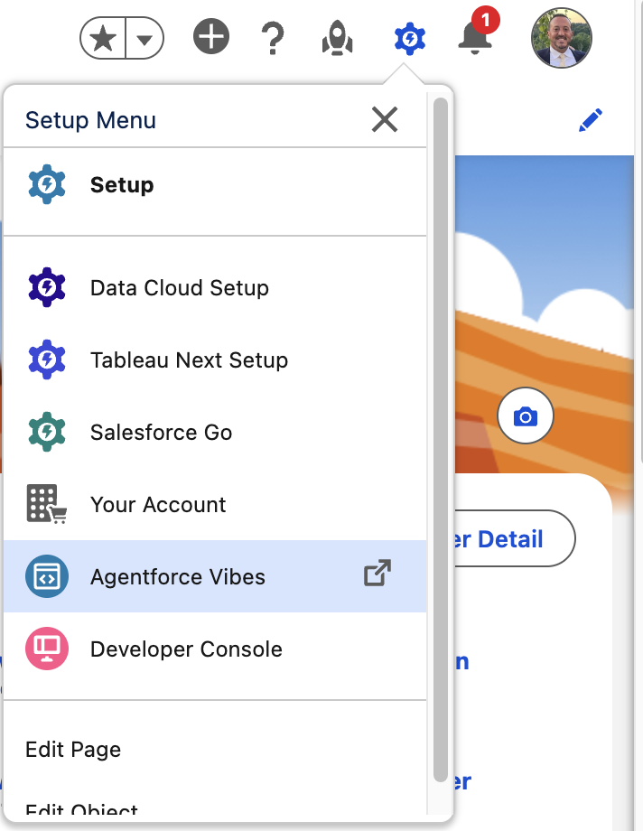
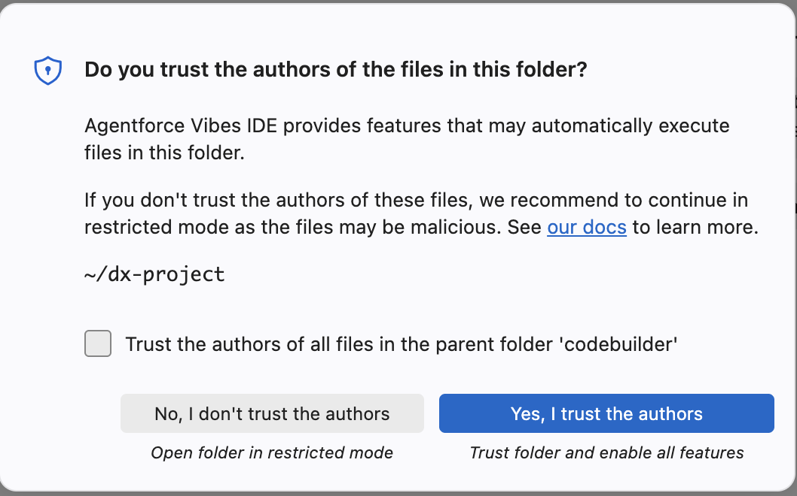
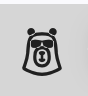
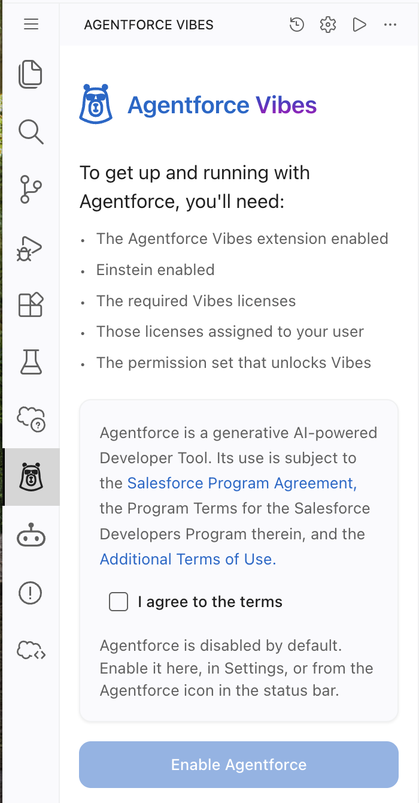
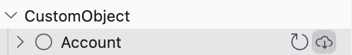
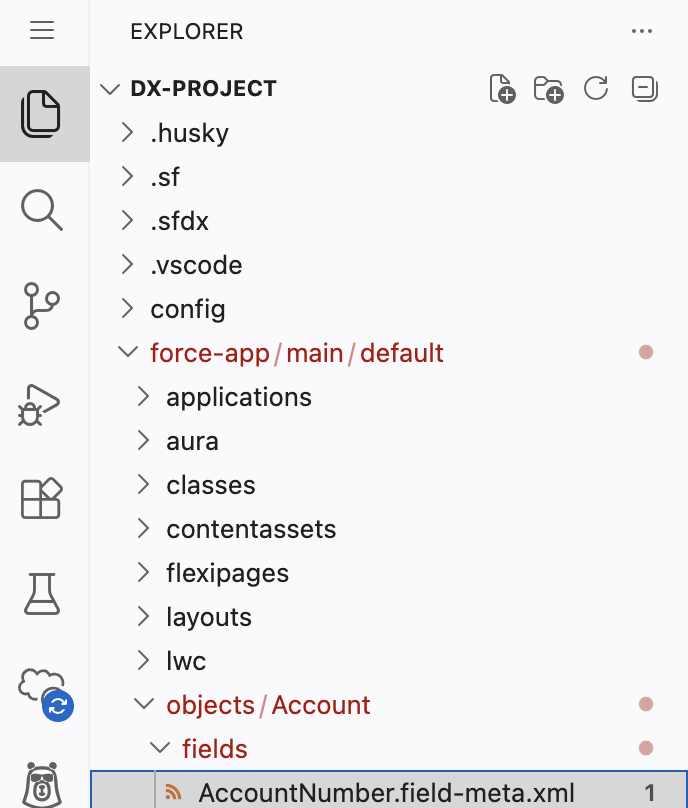

Agenda
One morning, one room, one build. The session opens with framing on agentic development, then moves into guided, hands-on time inside Agentforce Vibes.
Agentforce Vibes Workshop
Workshop Guides
These guides are meant to be followed inside the workshop org created for you. Go to orgfarm.salesforce.com/signup and enter the event code (provided the day of the workshop when you arrive) to get access. Click Preview to expand a guide inline.
Launch and Get Familiar with Agentforce Vibes
A fast, guided walkthrough before hands-on time begins: what Agentforce Vibes is, how to launch it, and the IDE areas you'll use for the rest of the session.
What you're building toward
Agentforce Vibes is Salesforce's enterprise-grade vibe coding environment, a context-aware, AI-powered IDE that turns natural language into working Salesforce applications. Built on the Salesforce Platform and Trust Layer, Vibes accelerates every stage of the development lifecycle: planning, building, testing, deploying, and iterating.
Unlike basic AI code assistants that generate snippets, Agentforce Vibes is designed specifically for secure, governed enterprise development. It understands your org's metadata, adheres to your patterns and Rules, and works with Salesforce tools such as Sandboxes, Code Analyzer, DevOps Center, and the Salesforce DX MCP server.
Step 1: Launch Agentforce Vibes

The gear/lightning icon in the top app bar opens the Setup Menu. Agentforce Vibes is listed below Your Account.

This appears the first time the IDE opens your new DX project folder.

Look for this bear icon in the activity bar along the left edge of the IDE.

The Agentforce Vibes panel, opened from the sidebar icon above.
Step 2: Get Familiar with the Agentforce Vibes IDE
CMD+SHIFT+P on Mac or CTRL+SHIFT+P on PC). Use it to access Agentforce Vibes commands, SFDX commands, Lightning Preview, and project tools and utilities.Color Theme.Org Browser: Focus on Metadata View in the Command Palette). Use it to browse metadata in your org, expand objects, fields, Apex classes, and LWCs, and download metadata directly into your SFDX project.CTRL+` on both Mac and Windows) to view output from SFDX commands, run optional CLI commands, and inspect logs or deployment messages.Summary
In this exercise, you launched Agentforce Vibes and activated it in your Salesforce org. You walked through the initial setup flow, enabled the agent, and confirmed that your development environment and sidebar were initialized correctly. With Vibes now running inside your IDE, you're ready to begin exploring the tools and features that support AI-assisted development.
Configure Your Agentforce Vibes Project
Connect Agentforce Vibes to your org's MCP servers, then explore what makes up a Salesforce project.
Step 1: Activate the MCP servers in Setup
MCP Servers, then select MCP Servers.Step 2: Connect them in Agentforce Vibes
Step 3: Explore the makeup of a Salesforce project
Look for this cloud/code icon in the activity bar to open the Org Browser Sidebar.

The cloud icon next to each object retrieves its metadata into your project.

The Explorer icon (top of the activity bar) opens this file tree. Folders with retrieved metadata appear in your DX project under force-app/main/default.
Step 4: Explore Skills, Rules, and Commands
Summary
You connected Agentforce Vibes to your org's MCP servers, then explored the pieces that make up a Salesforce project: objects, components, and permission sets. Your environment is ready for the next step, where you'll use Vibes to build something new.
Hands-On Build, Part 1 – Option 1
Describe what you want, and build it with Agentforce Vibes.
What you're building
A Facility Inspection tracker: a simple object for logging site visits, safety checks, or compliance reviews. You'll describe it, add some sample data, ask a question about it, and document it, all in plain language.
Step 1: Build the object
Step 2: Add sample data
Step 3: Ask a question
Step 4: Document it
Summary
You built an object, added data, asked a question, and documented it, all by describing what you wanted. That's the whole loop: describe, review, approve.